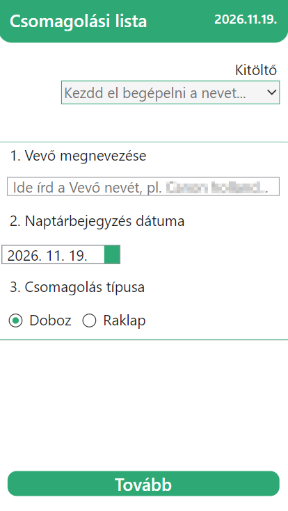
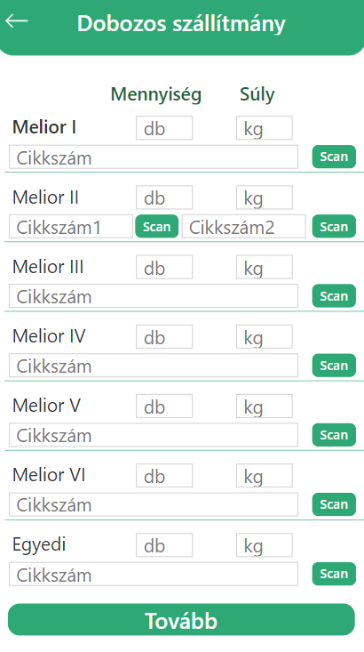
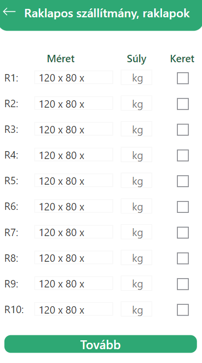
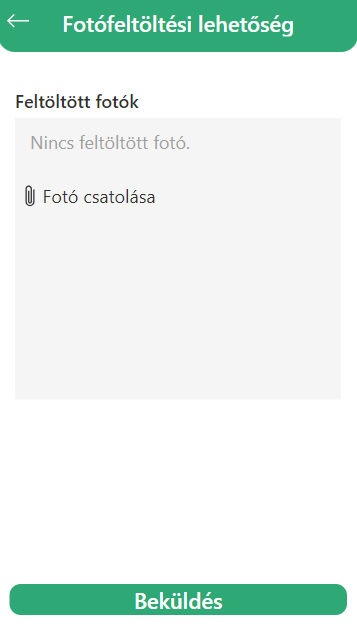

Warehouse Packing List Automation
A phone app for the warehouse, an automatic email for customer service, and structured data for the packaging records needed for Hungarian EPR reporting (MOHU). In daily use since October 2026.
01 · The problem
Packing lists were recorded in a generic Microsoft Forms form. It had no real structure for boxes and pallets, customer service had to be informed separately, and the data could not be reused for the packaging-material report.The ERP has a function for this, but changing it would have meant an external vendor: slow and costl
02 · The solution
A mobile Power App guides warehouse staff through basic data input about the shipment package: box or pallet details and photos can be taken too. Article numbers are filled in by scanning the barcode with the phone camera within the app. On submit, the data goes into three linked SharePoint lists, and a Power Automate flow emails the full packing list, photos attached, to customer service and the warehouse. An Excel report reads the same lists for the MOHU packaging log.

03 · The app in use
Four screens, built for quick use at the packing station.

Basic dataCustomer, packer, date, packing type
BoxesQuantity, weight and article number, by barcode scan or typed
PalletsUp to 10 pallets, optional boxes on top
PhotosAttachments, then the checks before submit04 · After the submit: email
When all items are saved, the status of the packing list changes and the flow starts. It builds HTML tables (boxes, or pallets and the boxes on them), adds the photos as attachments and sends the email to customer service and the warehouse. Nobody has to write it by hand.
04 · After the submit: EPR report
An Excel file reads the three SharePoint lists with Power Query and joins every box and pallet row to its customer, date, packer and packing type. One refresh gives ready input for the packaging-material records used in EPR (Extended Producer Responsibility) reporting to MOHU. who runs the EPR system.
05 · Results
06 · Key decisions
- Parent–child SharePoint lists. One packing list, with box and pallet items linked by lookup.
- Status field as the trigger. The flow fires only once all child items are saved.
- Checks before submit. Where a quantity is given, the weight is required too, and the other way round. Incomplete data does not get through.
- Barcode scan for article numbers. The quantity mark at the end of the code (like Q80) is cut off automatically, only the clean article number stays.
- HTML tables via Select + Join. Readable emails without premium connectors.
- No Dataverse. Standard connectors only, so no extra licensing cost.